Uni project 1 of 3
Safe Sense
A smart bike helmet that warns older cyclists about traffic coming from behind.
- 01Older cyclists don’t see it coming.
- 02We started on the handlebar.
- 03So we moved it onto the helmet.
- 04Can a camera spot a car?
- 05The Safe Sense helmet.
01The problem
Older cyclists don’t see it coming.
The Dutch cycle everywhere, and so do the elderly. But people over 65 fall more often, react slower and miss hazards, and faster e-bikes have only made it riskier. We set out to help them notice the traffic around them before it becomes dangerous.
“When older people cycle, I want them to be aware of their surroundings, so accidents are prevented.”Job to be done
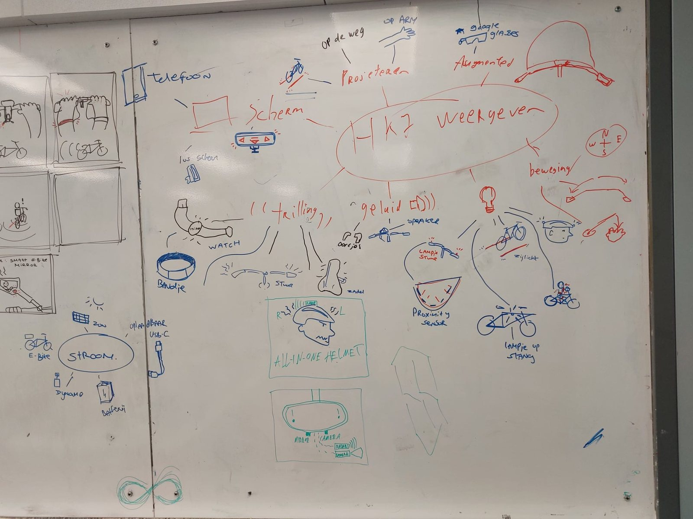
02Desirability
We started on the handlebar.
Our first concepts put a screen on the handlebar, fed by a rear camera. We tested them with older users, a camera-versus-mirror ride and a traffic-simulator game we built.
- Users don’t just want a warning.→ they want information
- A screen was too much to process while riding.→ keep it simple
- LEDs on the handlebar were unclear, and it shouldn’t be stuck to one bike.→ move it to the rider
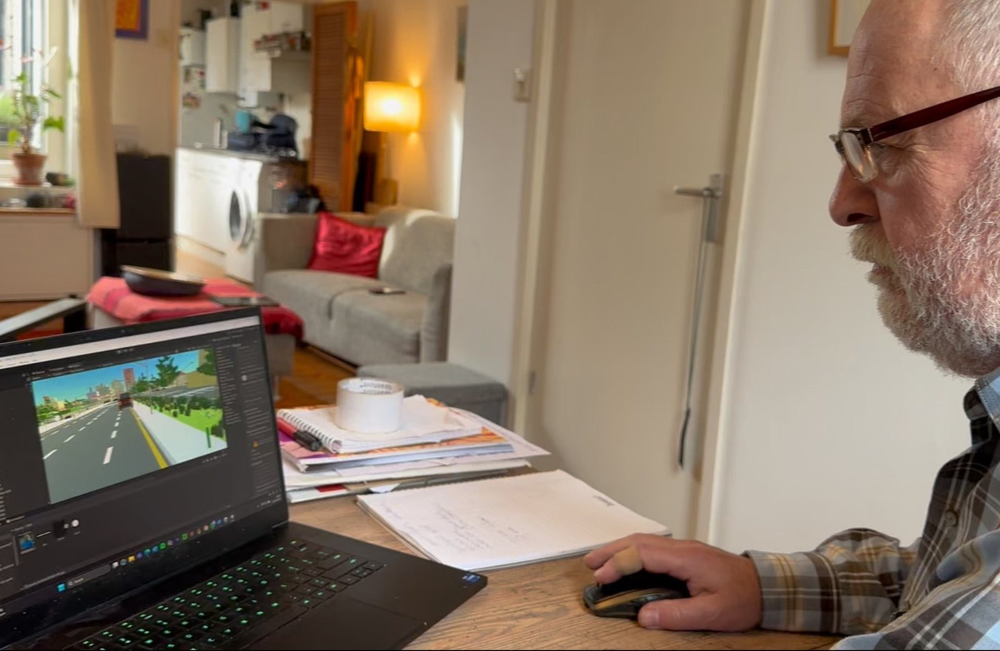
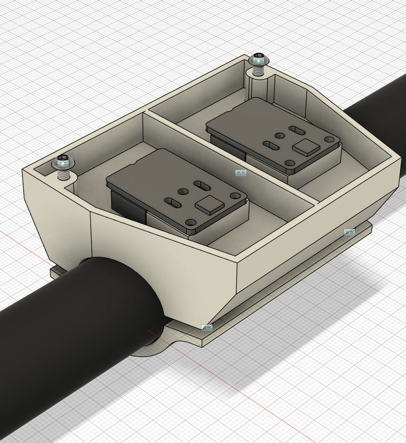
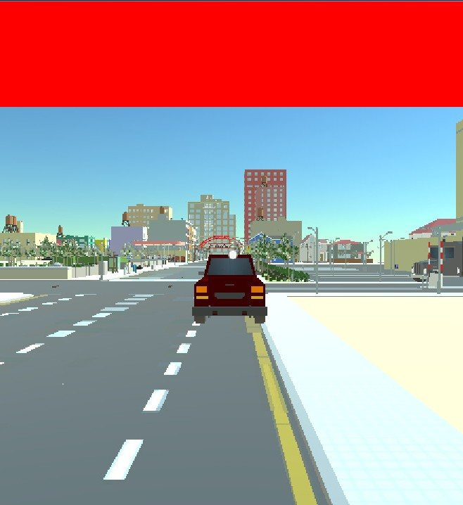
03Feasibility
So we moved it onto the helmet.
A helmet goes wherever you go. Each of us then tested one riskiest assumption: what should it look like, and how heavy can it get? We sketched forms, turned them into 3D variants for users to rate, and tested hidden weights on a prototype.
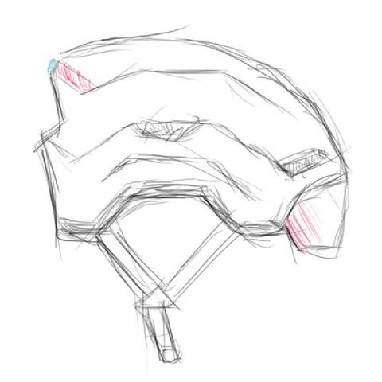
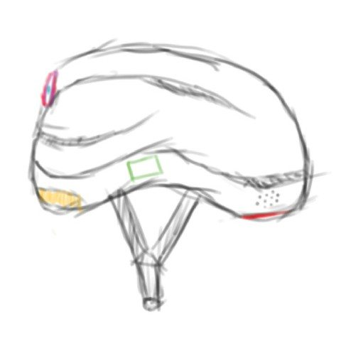
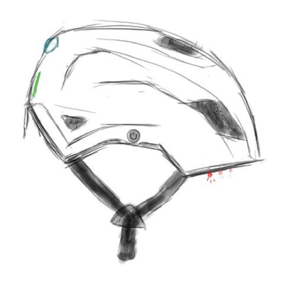
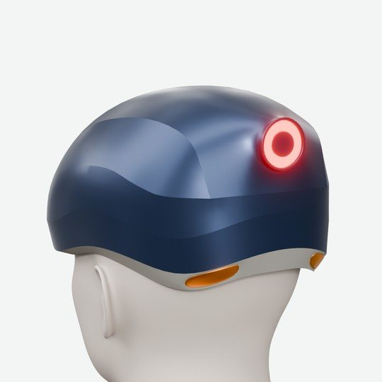
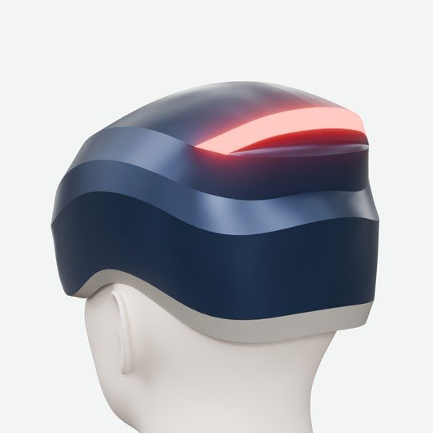
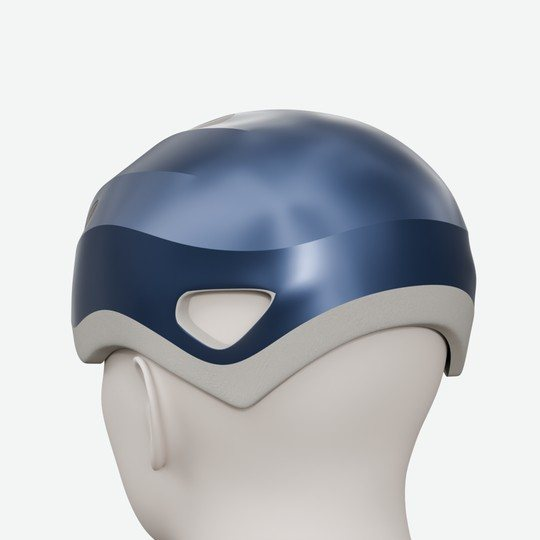
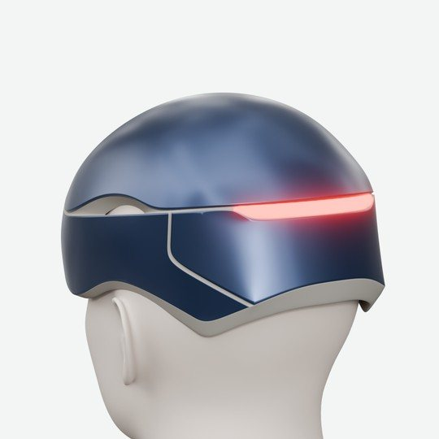
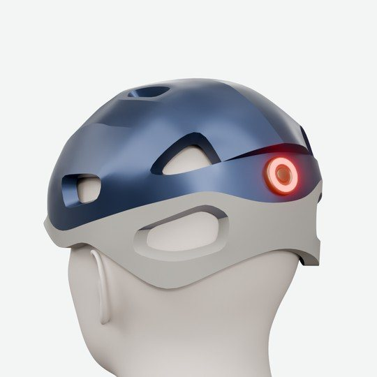
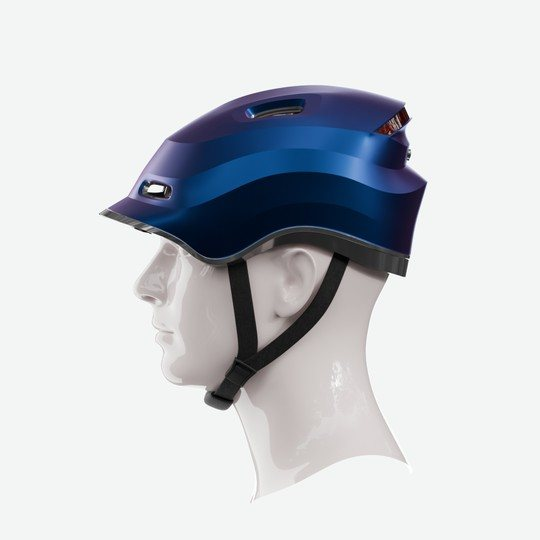
04Feasibility
Can a camera spot a car?
There’s no perfect sensor: LiDAR is too expensive, and ultrasonic and ToF aren’t reliable enough. So we tested image recognition: a Raspberry Pi 4 and camera in a CAD-designed bike mount, running OpenCV trained on the COCO dataset. It detected overtaking cars very reliably.
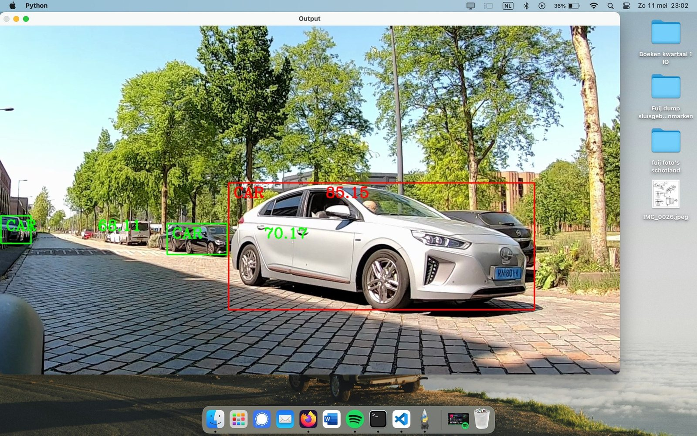
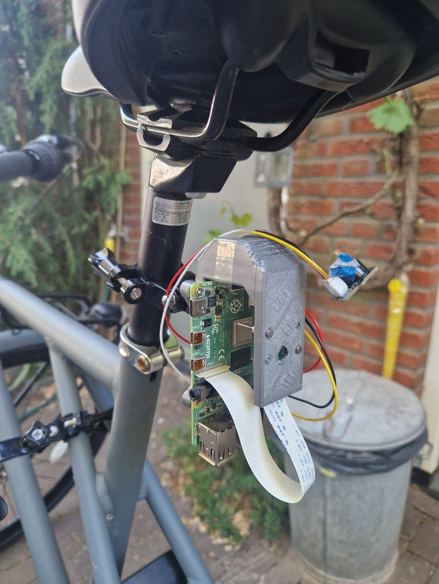
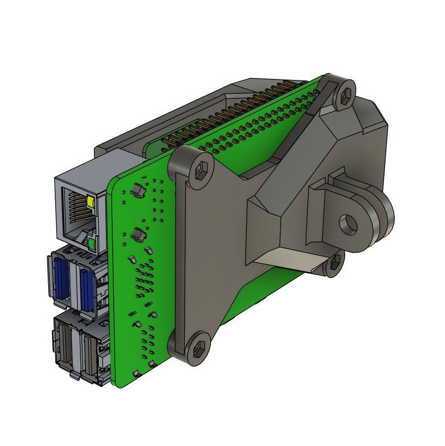
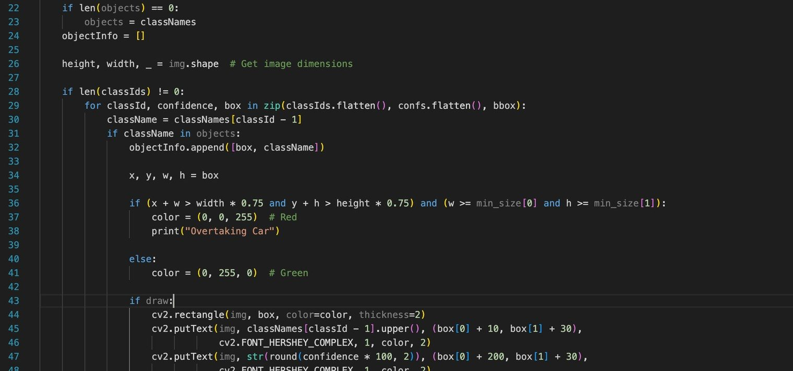
05Viability
The Safe Sense helmet.
A rear camera spots overtaking traffic, and an LED strip in your field of view shows how close it is. An optional app streams the camera to your phone. For the investor pitch we 3D-printed a 1:1 helmet with working LEDs.
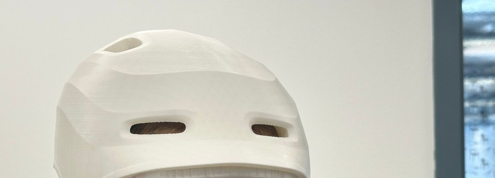
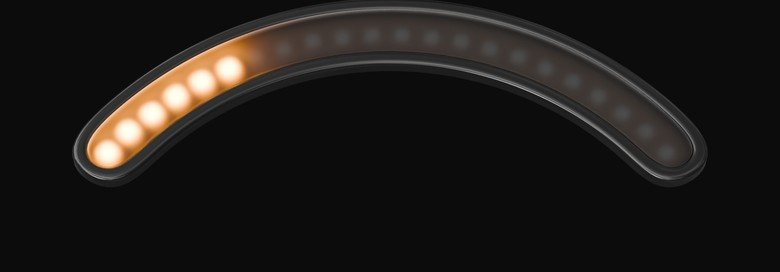
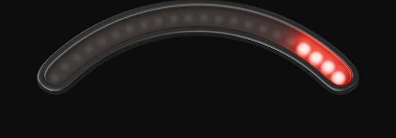
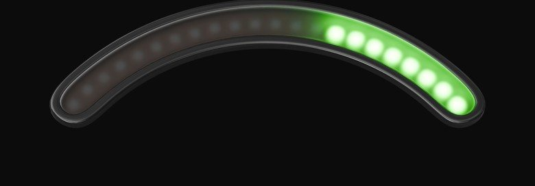